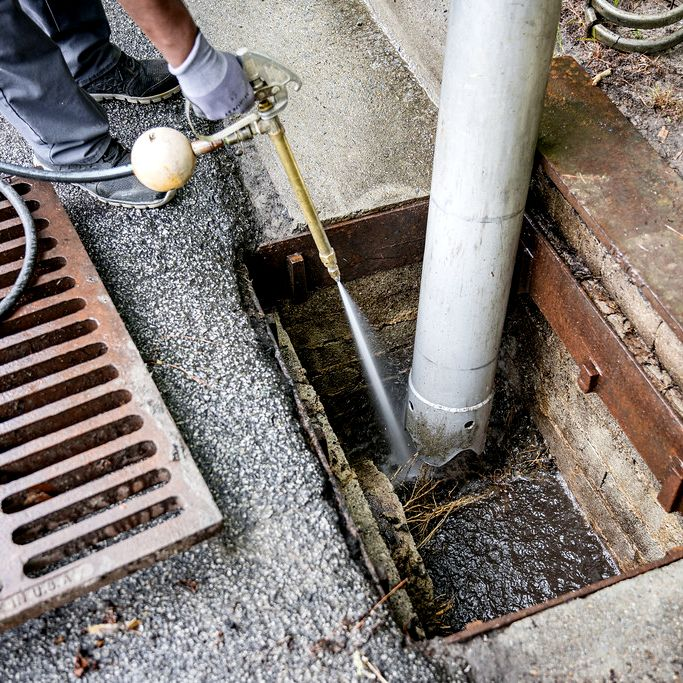
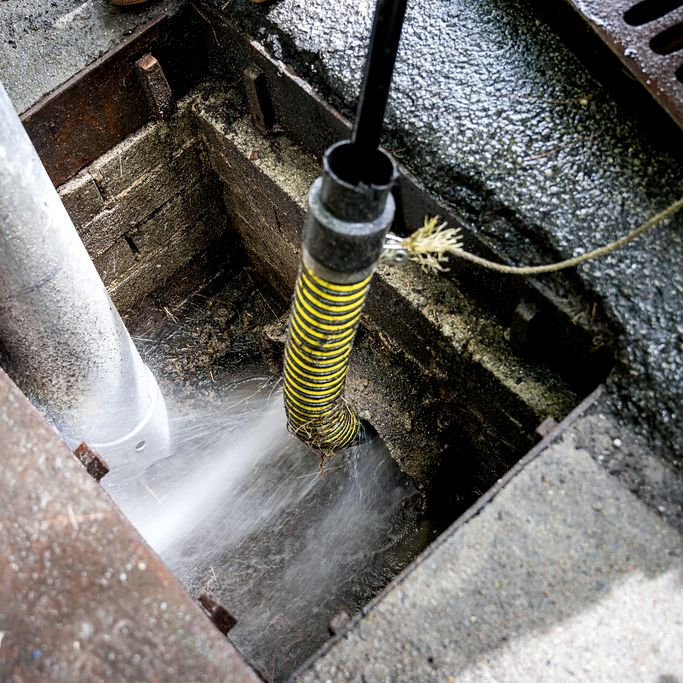
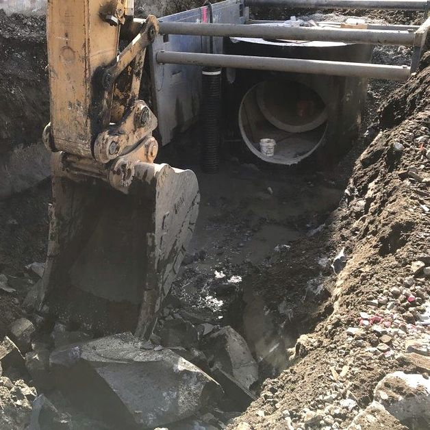

On call today · North Shore
Blocked drain? Call Ben. Clear today.
Clearway is Ben and a small crew of certifying drainlayers based in Glenfield. We clear blocked drains, find faults with a camera, and lay new drainage and stormwater, signed off with council.
from 58 Google reviews
call-outs for blocked drains
CCTV report back to you

Services
Everything below ground, from one blocked gully trap to a full new drainage system for a build.
-
Drain unblocking
High-pressure jetting for kitchens, toilets, gully traps and stormwater lines. Roots cut out, not just pushed along.
Same day -
CCTV drain inspections
A camera down the line to find cracks, roots and dips. Useful before you buy a house or start a reno.
Report in 24 h -
New drainage
Wastewater lines for new builds, extensions and bathroom moves, laid to fall and pressure-tested.
Quote in 2 days -
Stormwater
Downpipes, soak holes, sumps and channel drains so water goes where it should, not under the house.
Quote in 2 days -
Septic tanks
Install, replace and repair septic systems and soakage fields on lifestyle blocks north of Albany.
Site visit -
Council sign-off
Ben is a certifying drainlayer. We book the inspections and supply the as-built plans for your code compliance.
As-builts included
How a blocked drain gets cleared
Most call-outs are four steps and about an hour on site. You get photos or video of what we found.
- 01Call or textphoto of the trap helps
Ben asks where it backs up and what's on that line. Usually on site the same day.
- 02Find itcamera, 10 min
The camera goes down to see what the block is and how far along it sits.
- 03Clear itjetter, 20–40 min
Jetted from the downstream end, roots cut, then flushed and checked again.
- 04Reportsame evening
Video and notes sent to you. If a pipe is broken, the fix is priced in writing.


Reviews
Sample reviews written for this style demo.
out of 5 on Google
-
“Toilet backing up on a Sunday morning. Ben was here by eleven, found tree roots at the boundary with the camera and had it running by lunch. Sent me the video that night.”
SarahBirkenheadDrain unblocking
-
“They laid the drainage for our new bathroom and sorted the council inspection with the plumber. Passed first time, and the as-built plan came through without me chasing.”
TaneBrowns BayNew drainage
-
“Got a CCTV inspection before we went unconditional. Clear report, a cracked joint flagged with a photo, and a written price to fix it we could take to the vendor.”
PriyaMilfordCCTV inspection
Where we go
Based in Glenfield. The whole North Shore, plus the Hibiscus Coast for septic and new drainage.
| Suburb | Area | Minutes |
|---|---|---|
| Glenfield, Birkenhead | Base | 5min |
| Northcote, Takapuna | Shore | 12min |
| Albany, Milford | Shore | 15min |
| Browns Bay, Torbay | Bays | 18min |
| Devonport | Bays | 20min |
| Orewa, Silverdale | Septic, new work | 35min |
Hibiscus Coast (amber row) is for septic systems and new drainage, booked ahead.
Call, text or send a job
For a blocked drain, call. For new drainage or a septic system, send the details and Ben will come and look.
- Mon–Fri
- 7:00 am – 5:30 pm
- Weekends
- Blocked drains only
- Quotes
- Within 2 working days